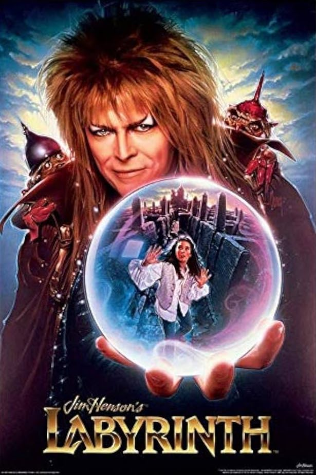

Labyrinth (1986) is a fantasy film directed by Jim Henson and
executive produced by George Lucas. The story follows
Sarah Williams (played by Jennifer Connelly), a teenage
girl who accidentally wishes her baby half-brother Toby away to the
Goblin King, Jareth (played by David Bowie).
To rescue
Toby, Sarah must navigate a magical, ever-changing labyrinth within 13
hours or he will be turned into a goblin forever. Along the way, she
meets a cast of fantastical creatures, including Hoggle (a grumpy
dwarf), Ludo (a gentle giant), and Sir Didymus (a fox-like knight). The
film blends puppetry, musical performances (featuring songs by Bowie),
and surreal imagery.
Labyrinth explores themes of growing up,
personal responsibility, and self-discovery, and while it was not a
major box office success initially, it has since gained a strong cult
following.